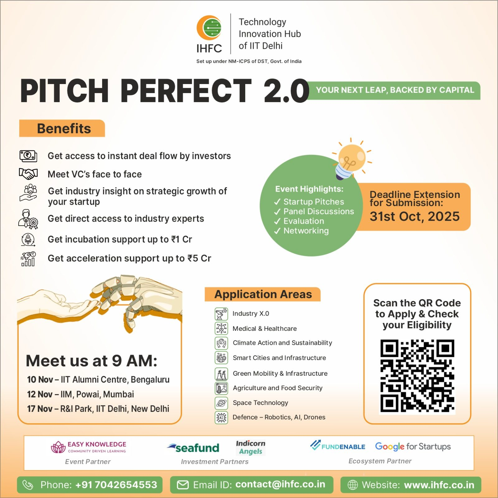
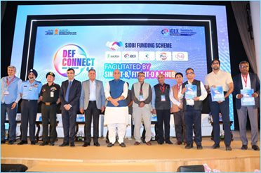
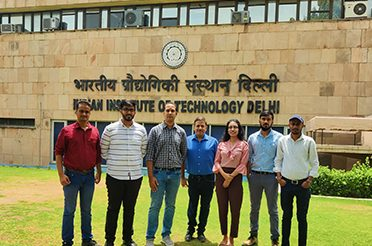

Hauz Khas · New Delhi · Unofficial student learning project
STARTUP ECOSYSTEM
From IIT Delhi ideas to real-world ventures
IIT Delhi’s startup ecosystem connects research, founders, mentors, investors and industry. FITT supports technology transfer, intellectual-property management, industry partnerships, startup incubation and mentoring.
FITT and IIT Delhi programmes link research and entrepreneurship with practical problems.
A REPORTED SNAPSHOT
Research that reaches beyond the lab
IIT Delhi’s Research Impact Report, released in January 2025, summarized institute activity over 2018–2024.
147startups incubatedBy IIT Delhi faculty and alumni during the seven-year period reported.
5,100+sponsored research projectsReported for the same seven-year period.
₹2,340 crorecumulative project fundingFigure reported by IIT Delhi in January 2025.
These are dated report figures, not live totals.
INCUBATION & ENTREPRENEURSHIP
Programs, people and ventures
Selected official IIT Delhi startup announcements and examples.

IHFC · 2025
Pitch Perfect 2.0
IIT Delhi’s Technology Innovation Hub IHFC announced a programme connecting deep-tech founders with incubation, investors, mentors and business support. The announcement described support of up to ₹1 crore for incubation and up to ₹5 crore for acceleration.

DEFENCE TECHNOLOGY
FITT and incubated startups
FITT has supported startups working on defence challenges through the iDEX ecosystem. In its October 2024 announcement, IIT Delhi reported support for more than 45 startups addressing 65 challenges.

HEALTH & MATERIALS
Health-focused ventures
IIT Delhi’s startup portfolio includes ventures in med-tech, biotech, smart textiles and healthcare. The image shows a startup team at IIT Delhi; it does not depict a specific product.
RESEARCH PARTNERSHIP
Institutional collaboration
Research partnerships connect teams across institutions and can support joint projects, postgraduate co-supervision and exchange.
IDEAS TO IMPACT
How the ecosystem works
Research & invention
Faculty and student teams develop technologies, prototypes and intellectual property across disciplines.
This is a student-made overview of selected IIT Delhi initiatives, not an official institute page or a complete startup directory.
TURNING RESEARCH AND IDEAS INTO VENTURES
Turning research and ideas into ventures
Entrepreneurship connects founders with mentors, technical expertise, intellectual-property support, partners and routes to funding. Examples on this page are illustrative and should be read with their captions.